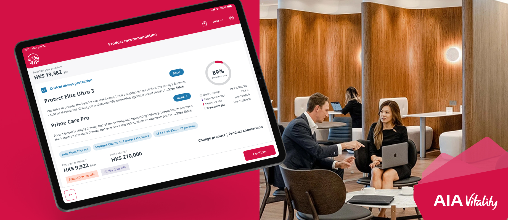
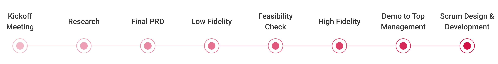
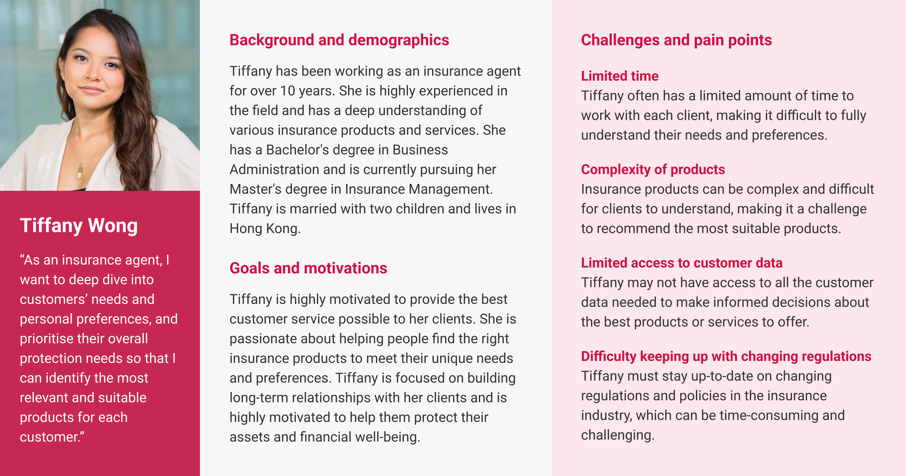
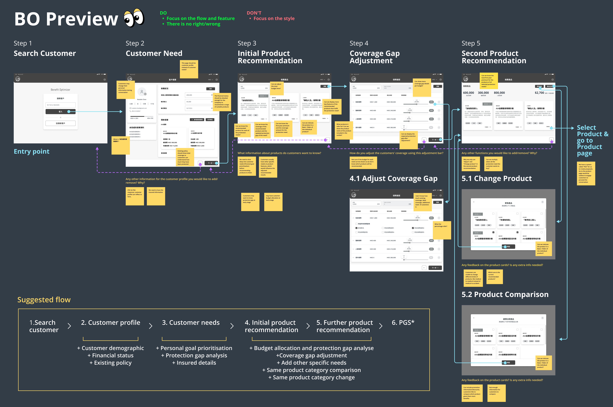
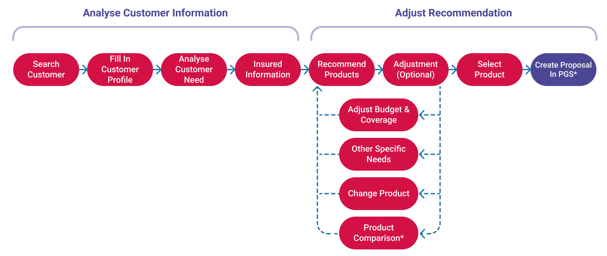

UX design: Wireframe and Prototype
External: Top management
To comply with my non-disclosure agreement, I have omitted and obfuscated confidential information in this case study. The information in this case study is my own and does not necessarily reflect the views of AIA Group Limited.
Identify products best fit to client needs with the company’s strategy
Benefit Optimize is a new digital tool that uses AI, and big data together with customer’s needs, budgets, and life goals combined with the company’s strategy to assist agents to come up with a “best-fits” recommendation for customers

Show the concept to top management and get funds approved

Since the first section was to perform a Proof of Concept (“POC”), my team focused on checking the concept's feasibility and how will it work and taking initial ideas or feedback around it from the client side, our final objective is to make the concept tangible and show it to top management and get funds approved.
Identify unique opportunities exist for the engine to improve agents' current sales practices
An interview was conducted with an agent representative regarding her experiences determining clients' particular needs and financial situations and ascertaining clients' long-term goals.
Research questions:- What are the biggest pain points that agents face when recommending insurance products to individual customers, and how do these pain points affect their ability to provide high-quality service?
- How do agents currently identify the most relevant and suitable insurance products for customers, and what tools or resources do they use in AIA to support this process?
- What features or capabilities would agents find most valuable in an AI-driven recommendation engine for insurance products, such as personalized recommendations, real-time data analysis, or integration with other systems?
- How can the engine be integrated into agents' existing workflows and processes, and what training or support would be needed to ensure successful adoption and use?
We created a user profile of agents with several years of service in insurance industry:

Design goals- Personalized Recommendations: The product recommendation engine should be able to provide personalized recommendations based on the customer's individual needs, preferences, and lifestyle
- Ease of Use: The system should be user-friendly and easy for agents to navigate, with a simple and intuitive interface that allows them to quickly find the most relevant products for each customer
- Accuracy: The system should be accurate and reliable, providing agents with the most up-to-date and relevant information on insurance products, rates, and coverage options
- Comprehensive Coverage: The system should recommend insurance products that offer comprehensive coverage, including a wide range of benefits and protection against various risks
- Flexibility: The system should offer flexible coverage options that can be customized to meet the unique needs of each customer, including the ability to adjust coverage levels and deductibles
- Cost-Effective: The system should recommend insurance products that offer competitive rates and value for money, ensuring that customers get the best possible coverage at an affordable price
- Integration: The engine should be able to integrate with AIA's other systems and platforms, such as CRM tools and customer data management systems, to provide a seamless and efficient experience for agents and customers alike
Brainstorm the possible UX for the concept with agents

Designing new features within the current sales practices experience required us to brainstorm not only the design but how we would introduce this new flow to users. The client was specific in their needs, so we explored different solutions, sketched out the user flows, and discussed them with agents, who pointed us in the right direction. We transformed the findings into insights to improve the flow and enhance features for business strategies.
Key insights:- The protection needs should be displayed according to the adjusted personal goal that the customer desire, and allow users to adjust the priority
- The product page should indicate each recommended product is a Basic / Rider of the individual product, and display the coverage and the updated protection Gap of the need
- Each protection gap should show the percentage of the potential gap over the ideal coverage for customers to understand the differences between the estimated ideal coverage and the existing coverage derived from the existing policy
- The interactive input on budget and features preference should allow users to adjust the priority in a flexible way
- The adjustment bar should display the existing coverage, the additional need, the expected protection gap, and ideal coverage in an easy-to-understand way
To make sure that we don’t end up with a non-feasible product, we also conducted a feasibility check with low-fidelity iterations with the tech lead and data team.
Better alignment with business goals
To ensure that the final solution effectively met user goals and aligned with the business's overall objectives, we utilized the finalized user flow as the foundation to define an ideal user experience and create a To-Be journey toward achieving it. This roadmap enabled us to pinpoint pain points and friction areas, leading to the discovery of opportunities to minimize them.

Using the insights gathered from the journey map, we developed prototypes as the final solution. To maintain design consistency with AIA brand guidelines, we utilized components and interactions from its design system.
Final result
Ultimately, the top management expressed their satisfaction and confidence in the features, as they believed that the tool would empower agents to initiate conversations and close deals with customers, thereby improving their sales practices. As a result, the project advanced to phase 2 with the objective of enriching the features and adding more value.
Takeaway
POC design is usually chaotic as everything works at rocket speed, but as a design consultant working on a B2B product for insurance agents, it was crucial not to rely solely on assumptions to define their pain points. Despite the limited time, I conducted targeted interviews and workshops with agents, which helped validate hypotheses and perform UX analysis. This taught me the importance of being adaptable and flexible in situations with limited UX research resources.